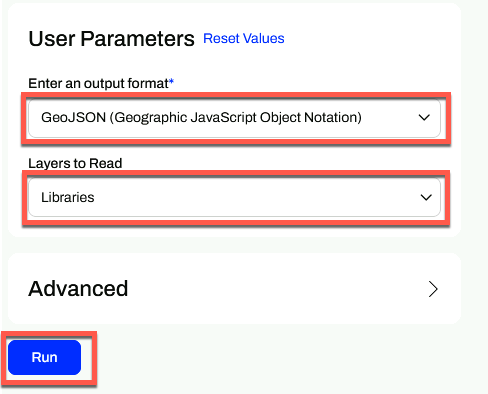
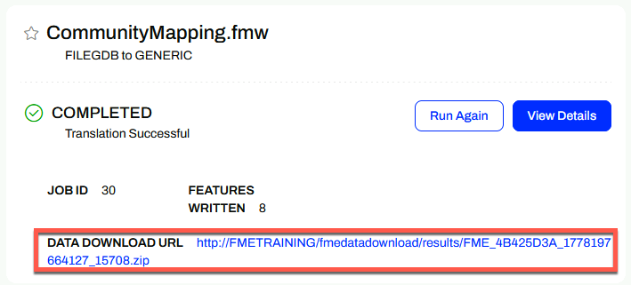

Learning Objectives
After completing this lesson, you’ll be able to:
- Run a workspace from FME Flow.
- Download the results from the Data Download service.
Instructions
In this lesson, you will:
- Scroll down to read the text below.
- Complete the exercise by following the steps.
- Complete the Quiz toward the bottom of the page.
- Optional: Let us know if you found this lesson relevant to your role by filling out the survey at the bottom of the page.
- Click 'Next' to mark the lesson complete.
Resources
- Starting workspace (should already be published to FME Flow as per the previous lesson’s instructions)
- C:\FMEData\Workspaces\IntegrateDataWithTheFMEPlatform\publish-a-self-serve-workspace-to-the-web-complete.fmw
- CommunityMap.gdb.zip
- C:\FMEData\Data\CommunityMapping\CommunityMap.gdb
Scenario

Frank has published his workspace to FME Flow so end-users can request GIS data on demand. His workspace reads feature classes from the community mapping geodatabase, writes them to a user-selected format, and delivers the results as a downloadable ZIP file. He wants to test the experience by requesting the Libraries dataset in GeoJSON format to confirm the workspace behaves correctly for end-users.
In this exercise, you will:
- Run the published workspace from FME Flow, selecting a specific layer and output format.
- Download and examine the results from the Data Download service.
1) Log In to FME Flow
- Log in to your FME Flow instance (2026.1 or later). It is recommended that you use the FME Academy virtual machine.
- Navigate to the Run Workspace page for Self-Serve > CommunityMapping.fmw.
- You can also open the workspace directly using the link from the Translation Log in FME Workbench if you still have it open from the previous exercise.

2) Configure and Run the Workspace
Under User Parameters, you will set the layer and output format to request.
- Set Output Format to GeoJSON.
- Set Layers to Read to Libraries.
- Click Run.

3) Download and Examine the Results
- When the workspace finishes, click the download link on the results page to save the output as a ZIP file.
- Extract the ZIP file and open the results in your preferred application.
- Examine the features in the dataset.

Leave Us Feedback on This Lesson